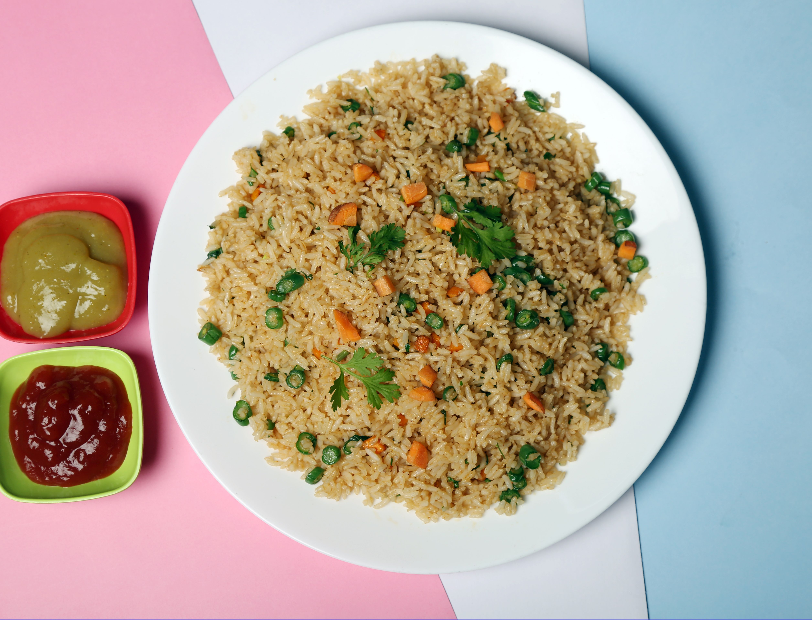

Vegetable Fried Rice

Vegetable Fried Rice is popular Asian-inspired dish made by stir-frying cooked rice with fresh vegetables, soy sauce, and seasonings. It is quick to prepare and makes a nutritious meal.
Ingredients
- Cooked Rice
- Carrot
- Green peas
- Bell pepper
- Onion
- Spring onion
- Garlic
- Soy sauce
- Vegetable oil
- Salt
- Black Pepper
- Sesame oil (optional)
Steps
- Heat oil in a wok or pan.
- Saute garlic and onion until fragrant.
- Add carrots, peas, and bell peppers, then cook for 3-5 minutes.
- Add the cooked rice and mix well
- Pour in soy sauce and season with salt and pepper.
- Stir-fry for 2-3 minutes until everything is well combined.
- Garnish with chopped spring onions and serve hot.
Home